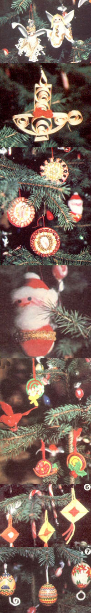

'Tis the season for festive gatherings, the reinforcement of family traditions, and joyous celebrations ushering in yet another year. And no matter what the cause for holiday rejoicing-be it a rededication to one's faith or the winter solstice-there's no better time for a party!
Of course, tree decorating is a popular reason for yuletide get-togethers. And my family has, these past few years, established a new tradition . . . by hosting annual Down-Home Organic Christmas Tree Ornament-Making Parties!
Now that's sure a mouthful to say, but the idea is simple: We invite friends and relations each year to join in creating a new season's worth of homemade decora tions .. . baubles that are a bit more permanent than cranberry, popcorn, and paper-chain garlands. And we've found that it's a lot more fun to make the ornaments than merely to hang them! Best of all, every year as we unpack our best efforts from previous seasons, the handcrafted objects become nostalgic reminders of shared joys from past Christmases.
Here are some of our most successful projects for you to try.
Eggs are seldom in short supply on most farms and homesteads, and their shells make beautiful and natural substitutes for the slick, mass-produced balls of glass that adorn most American Christmas trees. (They don't need to be white shells, by the way . . . very nice effects can be produced with the beige and brown eggs laid by many homestead hens.)
Empty the contents of the egg by poking a hole in each tip with a large needle, and gently blowing at one end. Rinse the inside of the empty shell carefully, and then set the future ornament aside to dry.
We paint our hen fruit with enamel, acrylic, or oil paints in four festive colors: red, blue, yellow, and green. Our decorations tend to be traditional scenes or fanciful geometric patterns, but the design possibilities are all but unlimited.
After the painted shells are completely dry, the eggs can be covered with a coat of clear varnish. This will darken the background colors somewhat, but the ornaments will be much stronger and more durable in their protective jackets.
Finally, poke a pipe cleaner through the bottom hole and out the top of each shell, bend its lower end to hold the egg, and shape a loop in the upper tip. The decoration is ready to hang!
Your pantry can provide most of the ingredients for "kitchen clay", which can be turned into unique tree trimmers. Salt clay is made by mixing together 2 cups of white flour, 1 cup of salt, 1/2 cup of powdered tempera paint (any color), 2 tablespoons of vegetable oil, and 2 cups of water. Knead the dough until it's smooth. The clay will be ready to work with when it feels neither crumbly nor wet and doesn't stick to your fingers. Make a separate batch for each color you want to use.
The dough can be rolled out and cut with cookie cutters, or shaped and molded freehand. A garlic press, cake decorator, pastry crimper, candy mold, or even a fork can be used to add texture and variety to the basic forms. Just remember always to punch a little hole near the top of each ornament to accommodate a hanging loop. Then air-dry the salt clay figures on wax paper at room temperature (this could take up to two days, depending on the humidity level of your area), and they're done.
Baker's clay ornaments-which should first be dried in the oven and then deco rated-look a bit like sugar cookies. Make the "batter" by combining 4 cups of flour, 1 cup of salt, and 1-3/4 cups of water. Knead the mixture-for at least 20 minutes-until it's very smooth and somewhat elastic, much like a tough bread dough, and can be formed into any shape you like. Then. bake the ornaments at a low oven setting (try 200 °F) until they're dry. (I usually allow about half an hour for the thinly rolled cookie-cutter shapes and as long as three hours for the thicker, handmolded forms.)
Once baked and cooled, the little sculptures can be painted with oils or acrylics. A final coat of either varnish or shellac will effectively preserve them and seal out moisture.
If you've been doing any sort of carpentry around your place this year, making ornaments from wood shavings may be an ideal project for your party. Slivers planed from clear pine or other soft woods can be turned into airy, lightweight creations ... decorations that will be as simple or intricate as you like.
You'll want to prepare a supply of the wood strips well before the day of the party. They're neatly quite easy to make. Take a length of straight, clear, knot-free board (a piece about an inch wide and two feet long works well) and soak the wood in water for 24 hours or more to soften the grain. Next, clamp your lumber in a vise and run a sharpened plane along the edge to produce a thin curl of wood. With a little practice you can combine the blade adjustment and downward pressure so well that you'll be able to cut a lot of strips quickly. Keep the shavings flexible by storing them in water until you need them.
It's possible to shape the damp wooden ribbons into any number of configurations. They can be coiled, woven, curled, bent, and/or twisted into just about any design your fleet-fingered guests can dream up. Combine the curlings in fanciful groupings, and clamp the wet, newly formed clusters with clothespins, bobby pins, or paper clips until they're dry. Then place a drop of glue wherever two bits of wood are joined, and reclamp them until the adhesive sets.
The shavings can be dyed with food coloring, spray-painted, left au naturel, or decorated with yarn or dried flowers. Again, use your individual or collective imagination.
Are there any dried beans and seeds on the pantry shelf . . . leftovers from last summer's garden bounty? Beautiful little mosaics can be created by mixing the nat ural colors of rice, corn, beans (mung, pin to, black, red, pink, or white;, and green and yellow split peas.
Cut a shape out of corrugated cardboarda circle, bell, tree, star, diamond, or what have you-and use it as a base for your organic mosaic. (Remember to punch that small hole to hang it by!) After the design elements have been arranged and glued down on the cardboard foundation (you may want to include a tiny picture to add a central point of interest), let the ornament dry thoroughly. Then simply bind the raw edges with narrow ribbon and thread a loop through the hole.
Are you tired of feeling wasteful every time you throw away a plastic egg carton? Well, if you save up those nonbiodegradable containers for the holidays instead, you and your guests can turn the throwaways into festive angels for the tree.
You'll need glue for this project, too . . . some little dolls' heads (they're available from hobby and craft stores, or you could substitute half-inch beads painted to look like tiny faces) ... bits of yarn, or embroidery thread, for hair ... and fancy trims (such as rickrack, lace, foil, ribbon, sequins, beads, and glitter) to gussy up the angelic garments.
Cut the angels' robed bodies from the peaks that separate the egg compartments, and their wings from the rounded sides of the cups themselves. You'll find that quite a lot of shape variation is possible. Then glue "hair" on the purchased heads, and decorate the bodies before assembling the figures. After the adhesive holding the trimmings has "set", cut little slits in the angels' backs and insert wings, securing them with a dab of glue. Attach the heads with another dab . . . and let the whole heavenly choir rest until dry (usually about an hour).
Now that you've found a good use for plastic egg cartons, you'll probably enjoy collecting the molded paper containers as well ... and transforming them into rolypoly little Santas to hang on your tree.
Begin by snipping the egg cups apart. Each "jolly old elf" is created by gluing pairs of the rounded bottoms together: Two egg cups form a closed ball, and two balls-one for the head and one for the belly-become a Santa'Claus!
Paint the entire lower ball and the top half of the upper ball a bright red for Santa's suit and hat. Then follow tradition and give him rosy pink cheeks and bright blue eyes. When the paint is dry enough not to smudge, glue on a cotton beard and hat ruff. Finally, wrap a ribbon or seam-binding belt around his fat little belly . . . and your merry of Saint Nick is all set to spruce up your pine!
The Mexican tradition of holiday decor includes hanging los oios de D ios-"eyes of God"-on the tree. These bright ornaments cost next to nothing and are quickly made. Miniature ones can be fashioned from yarn scraps on toothpicks (larger "eyes" require twig or popsicle-stick frames).
Children will find it easier to manage the yarn if the toothpicks are first set at right angles (to form an "X") with a drop of glue, but most adults should be able to manage with the sticks held loosely in hand.
Run the first end of yarn up one stick to the center and hold it there while you bind the sticks together tightly. Then wrap the framework with yarn, moving clockwise from arm to arm and looping around each support as you come to it, until the toothpicks are covered. You can change colors as you like . . . just tuck the resulting knot inside the wrapping. Bind off the end with a hanging loop woven through the last few rows, and drape the featherweights from the tips of your tree branches.
I hope these ideas will help you and yours have not only a splendid tree-trimming celebration, but a peaceful and happy holiday as well. Season's Greetings!
|
 |
|
|